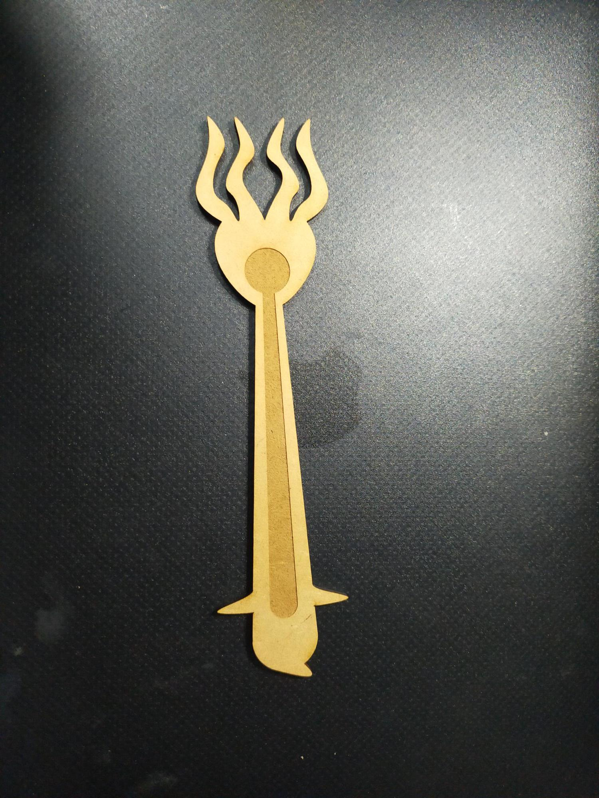
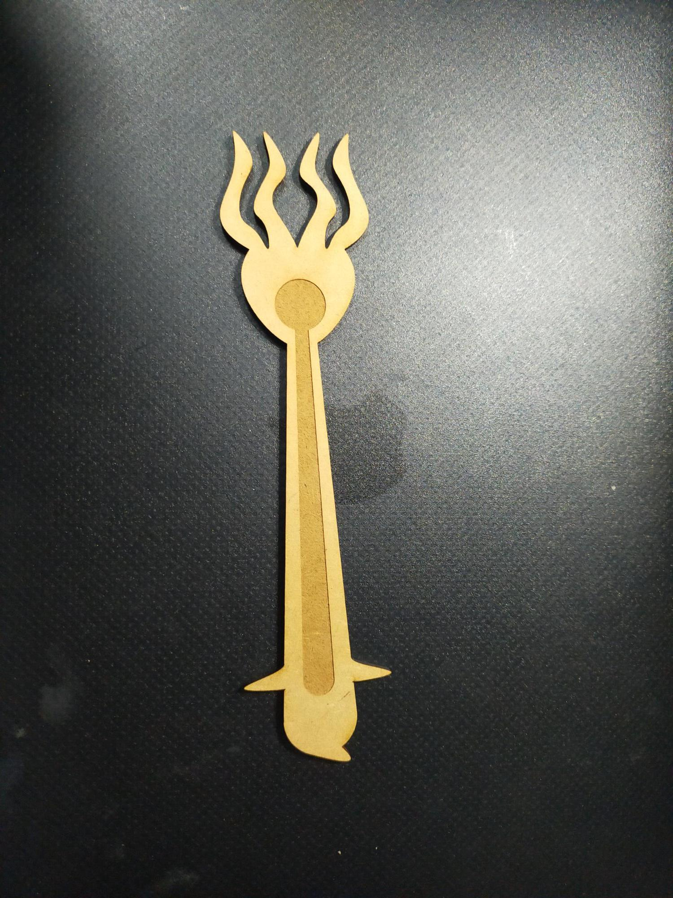

キモカワ① バッカルフォーク
説明
キモい生物をネットで検索していたところ、捕食時のクリオネ画像がヒットした。そのツノはバッカルコーンというらしい。
触手の形を生かして何か作りたいと思い、フォークの形に応用できないかと考えた。
クリオネの可愛さと気持ち悪さをデザインに落としこみたかった。
(2021/11/2)DXFファイルが破損していたのか、彫刻がずれて出力に失敗した。
※2021/11/4 データを新しく作り直したら成功した
なおこの時、5mmのMDFを持ってきていたことに気づかず、カッターの素材設定を2.5mm用にしており、そもそも切り出せなかった。
皆さん、素材をセッティングする時はよく確認しよう…！
＜画像＞
 
データ修正ついでにもう少し形をクリオネに寄せた。
これであなたもクリオネのように豪快に食べられるかも。
課題
木材で作成するとキモさより可愛さが９割な気がする。透明なプラ板で作れば、ここまでほっこりデザインにならないか？＋クリオネ感も演出できるか？DXFファイルはこちらからダウンロード
＜画像参考サイト＞
雑学カンパニー クリオネの食事シーンが怖すぎる。悪魔かよ…！【動画】（外部サイト）
キモカワ② カピバラおじさんブックストッパー
説明
どうしたらキモいデザインにできるかネットを検索していたところ、動物に人間の生足が生えた画像がヒットした。キモい生足→おじさんを連想し、そこから最近テレビで見た温泉に入るおじさんのようなカピバラを思い出した。
「ぱっと見可愛いけれど、実は気持ちわるい」作品にする方法を探していたところ、ちょうど本のしおりやブックストッパーに使えるのではと思った。
その形状から、「本で隠れている分には可愛いけれど、開くとキモい」作品にできるのではと思った。

一回目：失敗

口の部分の線（彫刻）をadobe illustlatorで0.001mmにしたところ、出力時に彫刻線として認識されなかった。
→線として彫刻する場合、太さを0.5mmにするとうまく反映された。
しおりにすると本を閉じた時と開いた時で印象が変わる。閉じると可愛いのに、開くとキモい。
課題をやっているとこいつの視線が痛い。
やらなきゃいけないのはわかってるんだよ…！
課題
約5cm×5cmで作ったら、腕と脚が短く隙間も狭かった。薄い本なら挟めるが、分厚い本は挟めなかった。手足をもっと長くするか、本体を大きくする必要あり。
- DXFファイルはこちらからダウンロード
懐かしカワイイ ランドセル型小箱（中断）
説明
懐かしいものを探していたら、デパートのランドセル売り場を見て、をテーマに何か作りたいと思った。小さいサイズにすれば、素材の質感も生かしつつコロッとした可愛さも表現できると思い、小箱を作ることにした。
素材を曲げたり、組み合わせる事もやってみたかったので、いい練習になると思った。
一回目[失敗]
敗因１：
アイデアを思いついてからノリと勢いでスケッチを起こしたら、噛み合わせ分の計算ミスで板がはまらないことがわかった(反省)(たまによくやらかす)
ノリと勢いと過信は失敗する可能性が高いので、皆さんにはちゃんと計算してから出力しよう…！
→反省してMakerCaseで作った箱データはこちら
{kind=link}
敗因２：
板の切り込みが短過ぎて全然曲がらなかった（レーザーで線を刻むのみ）。隣で作業していた方の出力物を見せてもらったところ、切り込みが大きい方がよく曲がることがわかった。
（2021.11.04）修正版の出力間に合わなかったので、これから地道にやります

作ったまま出力できていないDXFファイルはこちら
＜気を引く人間観察のスケッチ＞
横浜駅東口
横浜市西区南幸
横浜駅中央改札通路

京葉線八丁堀駅〜舞浜駅
東京都文京区白山・仕事先のお寺
横浜駅中央改札通路
横浜駅東口〜みなとみらいへの遊歩道
前の画面に戻る